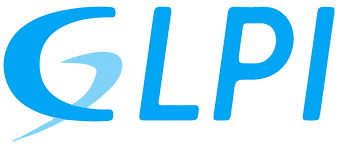

À propos
En Septembre 2024, au début de mon BTS J'ai commencé a travailler sur du HTML et du CSS sur Javascript pour la première fois. Au tout début il était difficile pour moi d'écrire un programme sur javascript mais au fil des mois je commence à acquérir de plus en plus de progression et ainsi approfondir mes connaissances. J'ai notamment travaillé sur Python afin de connaitre les bases de la programmation. J'ai acquis des compétences sur Linux et je peux installer des VM. Avant de rentrer dans ce BTS, j'ai fait un bac Production Imprimé au lycée Etienne Mimard où j'ai appris le fonctionnement d'une machine d'imprimeur et j'ai acquis des compétences notamment en graphisme.
Projets
Découvrez mes projets récents :
Projet GLPI:
Un projet par lequel on devait créer un serveur LAMP pour héberger le logiciel GLPI
Projet PORTFOLIO:
Le but de ce projet était de créer un site web pour héberger tous les projets et puis l'utliser comme CV
Projet SUPPORTDEV:
Un projet où on doit concevoir un site web qui communique une base de donnéees via le language PHP
Contact
N'hésitez pas à me contacter